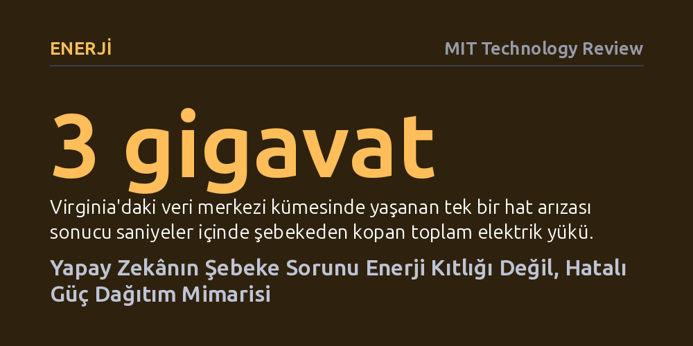

ENERJI · MIT Technology Review · 2026-09-11
Yapay zekâ veri merkezlerinin yol açtığı devasa elektrik kesintileri enerji üretim yetersizliğinden değil, tesis içindeki eski güç mimarisinden kaynaklanıyor. Çözüm, kesintisiz güç kaynaklarını bina dışına, orta gerilim seviyesine ve doğrudan ana akım hattının üzerine taşımakta yatıyor.
Yapay zekânın elektrik talebini karşılamak için sadece yeni santraller kurmanın yetmeyeceğini, veri merkezlerinin elektrik şebekesine bağlanma biçiminin baştan aşağı yenilenmesi gerektiğini gösteriyor.

Yapay zekâ modellerinin devasa elektrik iştahı tartışıldığında, gözler neredeyse her zaman elektrik santrallerine, yeni rüzgâr ve güneş yatırımlarına ya da nükleer reaktörlere çevriliyor. Genel kabul gören anlatı, şebekenin tek eksiğinin daha fazla elektron üretmek olduğu yönünde. Oysa Virginia'nın Ashburn bölgesinde—dünyanın en büyük veri merkezi kümelenmesinde—yaşanan son olaylar, krizin asıl kaynağının arz yetersizliği olmadığını kanıtladı. 22 Temmuz 2026'da tek bir iletim hattında meydana gelen arıza, saniyeler içinde 3 gigavattan fazla yükün şebekeden aniden kopmasına yol açtı.
Bu vaka münferit bir aksaklık da değildi; iki yıl önce aynı bölgede tek bir parafudrun arızalanması, yaklaşık 60 tesisi ve 1.500 megavatlık gücü tek anda devre dışı bırakmıştı. Demir-çelik tesisleri ya da rafineriler gibi geleneksel endüstriyel tüketiciler arıza anında şebekeden kademeli olarak ayrılıp sarsıntıyı yumuşatırken, yapay zekâ tesislerinin tümü tıpatıp aynı koruma mantığıyla aynı anda devreyi kesti. Sorun şebekenin yetersiz enerji üretmesi değil, gigavat ölçeğindeki bu tekdüze yüklerin şebekeyle kurduğu mimari bağın kırılganlığıydı.
Veri merkezlerinde kullanılan standart güç mimarisi onlarca yıldır kayda değer bir değişim geçirmedi. Orta gerilim olarak gelen elektrik tesis içine girer, transformatörlerle düşük voltaja düşürülür, bina içindeki kesintisiz güç kaynakları (UPS) tarafından filtrelenir ve ardından sunucu raflarına dağıtılır. Ancak yapay zekâ eğitimi gibi iş yükleri devreye girdiğinde bu klasik yapı üç kritik noktadan çatırdamaya başladı. Birincisi, bina içindeki rafların hemen yanına konan UPS aküleri, milisaniyeler içinde yüzde 70 sıçrayabilen değişken yapay zekâ yüklerini 7/24 dengelemek için değil, yalnızca jeneratörler devreye girene kadar birkaç dakikalık geçici köprü oluşturmak için tasarlanmıştı.
İkinci zafiyet, işletme verimliliğini artırmak adına kullanılan baypas mantığından kaynaklanıyor. Klasik dönüştürücüler enerji israfına yol açtığı için operatörler sunucuları genellikle şebekeye doğrudan bağlayan statik anahtarlarla eko-modda çalıştırıyor. Bu durumda iki yönlü filtreleme tamamen ortadan kalkıyor: Sunucuların milisaniyelik şiddetli güç dalgalanmaları filtrelenmeden doğrudan şebekeye fırlatılıyor, şebekedeki milisaniyenin altındaki mikro arızalar da anahtarların yakalayamayacağı bir hızla doğrudan pahalı çiplere ulaşıyor.
Üçüncü ve en tehlikeli sorun ise koruma yazılımlarının antika kalması. Bu sistemlerin mantığı, büyük yük kavramının yalnızca 50 megavat anlamına geldiği dönemlerde yazılmıştı. Sistem, bağlı olduğu şebekenin bütünsel dengesini göremiyor; milyarlarca dolarlık işlemcileri korumak amacıyla tasarlanmış kuralları körü körüne uyguluyor. Nitekim 2024 yılındaki Virginia kesintisinde yükün büyük bölümü, arka arkaya üç voltaj düşüşü saydığında otomatik olarak devreyi kesmek üzere programlanmış koruma mekanizmaları yüzünden kaybedildi. Sistem tam olarak tasarlandığı gibi, ancak şebeke için en felaket anda devreden çıktı.
Mühendislik açısından bakıldığında mesele bir işçilik kusuru değil, mevcut yükün eski tasarımı aşmış olmasıdır. Çözüm, güç mimarisini kökten değiştiren üç temel prensibe dayanıyor. İlk adım voltajı yukarı taşımak: Güç koşullandırmasını 480 volt gibi düşük seviyelerde yapmak yerine, tesisin şebekeden doğrudan çektiği 13,8 kilovolt ve üzeri orta gerilim seviyesine yükseltmek gerekiyor. İkinci adım ise ekipmanı dışarı çıkarmak: Aküleri ve dönüştürücüleri sunucu odalarından alıp trafo merkezinin yanındaki modüler dış muhafazalara yerleştirmek, bina içinde yalnızca hesaplama ve soğutma sistemlerine alan bırakıyor.
Üçüncü ve en devrimci adım ise güç sistemini hattın tam üzerine koymak. Geleneksel mimarideki gibi bir köşede bekleyip voltaj bozulduğunda devreye giren tepkisel aküler yerine, tesise giren her bir elektronun istisnasız üzerinden geçtiği sürekli bir hat üstü (inline) tampon katmanı kuruluyor. Hiçbir akım bu sistemin etrafından baypas edilmediği için tespit edilecek veya tetiklenecek mekanik bir anahtarlama gecikmesi de kalmıyor. Binlerce grafik işlemci (GPU) aynı anda azami yüke çıktığında bu tampon dalgalanmayı emiyor ve şebekeye tamamen pürüzsüz, düz bir tüketim profili sunuyor.
Bu yeni mimari, 2026 başında ABD Enerji Bakanlığı'na bağlı Ulusal Kayalık Dağlar Laboratuvarı'nda tam ölçekli testlerden geçirildi. Tesis, aynı test döngüsünde hem gerçek şebeke arızalarını hem de yapay zekâ ölçeğindeki yük sıçramalarını eşzamanlı simüle edebilen tek merkezdi. Sıfır voltaj çökmesi dahil olmak üzere şebeke arızaları ve en agresif yapay zekâ yük profilleri aynı anda uygulandığında ne sunucu tarafı ne de şebeke tarafı en ufak bir sarsıntı yaşadı; sistem Teksas şebeke operatörünün (ERCOT) en katı voltaj dalgalanması standartlarını fazlasıyla karşıladı.
Güç mimarisini orta gerilime ve bina dışına taşımanın sonuçları sadece teknik güvenilirlikle sınırlı kalmıyor, veri merkezlerinin tüm yatırım ekonomisini tersyüz ediyor. Sunucu salonlarını işgal eden devasa UPS odaları ortadan kalktığında, inşaat maliyeti başına düşen işlemci yoğunluğu hızla yükseliyor. Ayrıca elektrik dağıtım şirketi içerideki yüzlerce trafoyu, pompayı ve şalteri ayrı ayrı incelemek zorunda kalmıyor; yalnızca sınır hattındaki tek bir onaylı orta gerilim kutusunu sertifikalandırıyor. Bu da izin ve şebekeye bağlanma sürelerini aylarca kısaltıyor.
En çarpıcı dönüşüm ise ekonomik tarafta yaşanıyor. Orta gerilimde çalışan, dış mekânda konumlandırılmış ve kendi enerjisini depolayan bu yeni nesil güç katmanı, pasif bir sigorta poliçesi olmaktan çıkıp gelir üreten bir yatırıma dönüşüyor. Tesisler, elektrik tüketiminin zirve yaptığı saatlerde şebekeyi rahatlatan pik tıraşlama ve talep esnekliği programlarına katılarak doğrudan gelir elde edebiliyor ve vergi teşviklerinden yararlanabiliyor. Böylece yapay zekâ fabrikaları şebekenin sırtında öngörülemez bir kambur olmak yerine, ihtiyaç anında sisteme destek veren esnek birer şebeke varlığı haline geliyor.